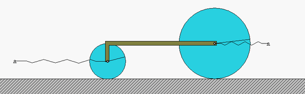

The inertia of an object is its resistance to changes in its rotational motion. Objects that have lots of inertia will require much more energy to change their velocity or their position on the axis of their rotation.

Oscillatory Motion is defined as the to and fro motion of an object from its mean position. The ideal condition is that the object can be in oscillatory motion forever in the absence of friction but in the real world, this is not possible, and the object must settle into equilibrium.
To describe mechanical oscillation, the term vibration is used which is found in a swinging pendulum. Likewise, the beating of the human heart is an example of oscillation in dynamic systems.
Linear Motion, also known as rectilinear motion, is a one-dimensional motion on a straight line, like an athlete running on a straight track. Linear motion meaning the change of position of an object with respect to time interval. We live in a universe that is in continuous motion. The fundamental particle of a matter i.e., atom is also in constant motion. Every physical process happening in the universe is composed of some sort of motion. The motion can either be fast or slow, but motion always exists. Motion is described in terms of the following terms: Distance, Displacement, Speed, and Time as discussed above.
NEXT